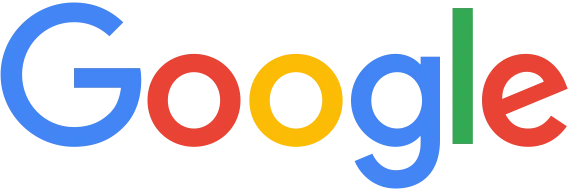
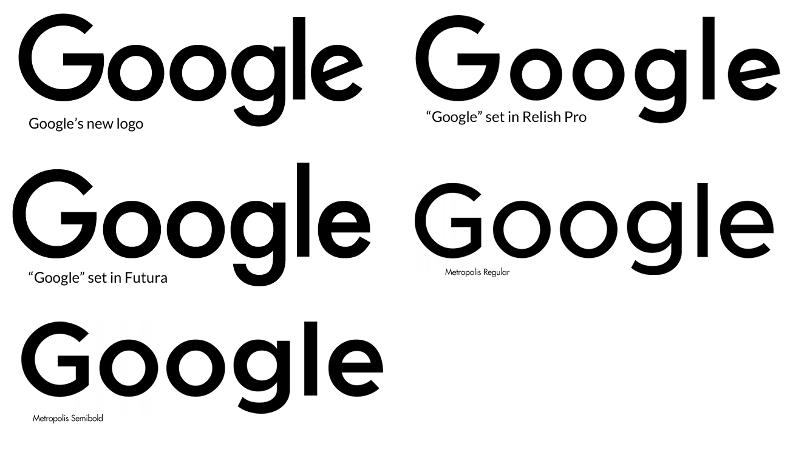

On this page

A modern, neutral, and highly legible sans-serif designed for digital clarity and versatility.
Designed by:
Google Typography Team
Foundry:
Country:
🌍 United States
Year:
2015 (as Product Sans, Google's logo typeface)
Intent
- Grew out of Product Sans, the typeface drawn for the 2015 Google logo, and became the typeface of Google's products and Android
- Designed to be neutral, readable, and adaptable across devices
- Balances geometric structure with open, friendly letterforms
- Optimized for digital screens and multiple sizes
Google aimed for a typeface that feels modern and functional without drawing attention to itself.
Context
- Smartphone and tablet use was rapidly growing
- Interfaces required clean, legible fonts for small screens
- Flat design and minimalism influenced typography choices
Typography was shifting toward screen-first, highly functional designs.
Type classification
- Primary: Sans-serif
- Secondary: Geometric sans-serif
Characterised by
- Open apertures and generous x-height
- Low stroke contrast for clarity
- Neutral, modern, and highly readable
- Designed for scalability across devices
Compared to Helvetica, Google Sans feels warmer, more approachable, and optimized for digital screens.
Examples in use


- Google Search, Gmail, Maps, YouTube
- Android OS and Material Design system
- Google marketing and branding materials
Why designers still use it
- Conveys clarity, neutrality, and modern efficiency
- Excellent readability for UI, web, and app design
- Works across multiple platforms and languages
When not to use it
- Projects needing strong personality or emotion
- Print-heavy, decorative, or highly expressive branding
- Situations where a serif or more distinctive typeface is needed
Usage
Use this typeface when you want to communicate clarity, neutrality, and modern digital efficiency — but not personality or historical character.
Why it matters for UX
Google Sans shows how a brand typeface can become an interface typeface: it started as a logo and now speaks in every Google product. It's a model for how a friendly geometric sans can carry brand personality into UI without hurting readability.
Try it: brand to interface (20 minutes)
- Take a screenshot of a Google app and of an Android settings screen.
- Mark where Google Sans is used and where a more neutral face (Roboto) is used.
- Write one rule for when your own product would use its brand typeface, and when a neutral one.
Media
Resources
Key takeaways
- Google Sans grew out of Product Sans, the typeface drawn for Google's 2015 logo.
- It's a friendly geometric sans that carries the brand into the interface.
- Brand typefaces work best for headings and key UI; neutral faces for dense text.